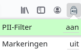

Filter
Bedankt voor het uitproberen van het PII-Filter. U kunt deze activeren door rechtsboven in de toolbar op het slotje te klikken en vervolgens het PII-Filter op actief te zetten:

Indien u gebruik wilt maken van de experimentele markeringen binnen de ondersteunde tekstvelden kunt u deze ook activeren:
Deze add-on is nog experimenteel. Vragen, opmerkingen, of ervaringen mag u delen via een issue op onze Github.
Het PII-Filter is een SIDN pioniersproject.